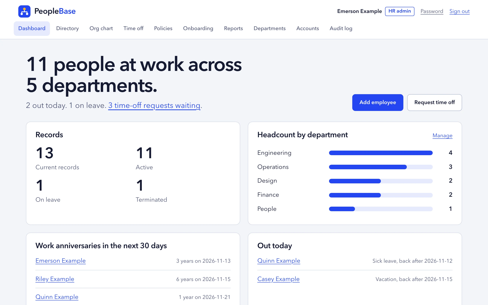
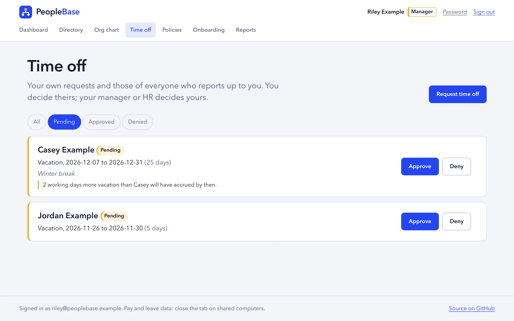
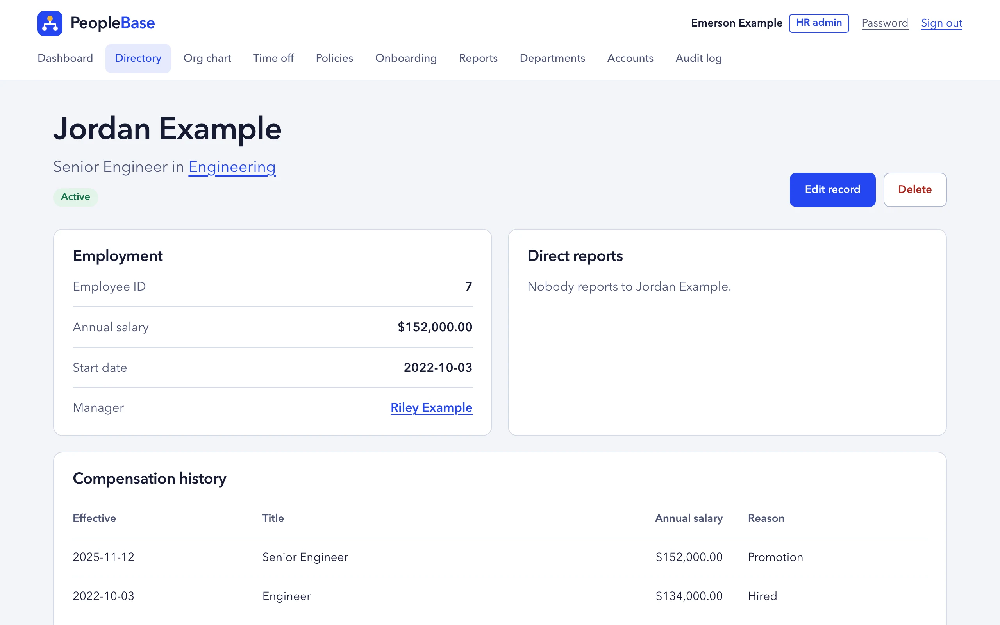
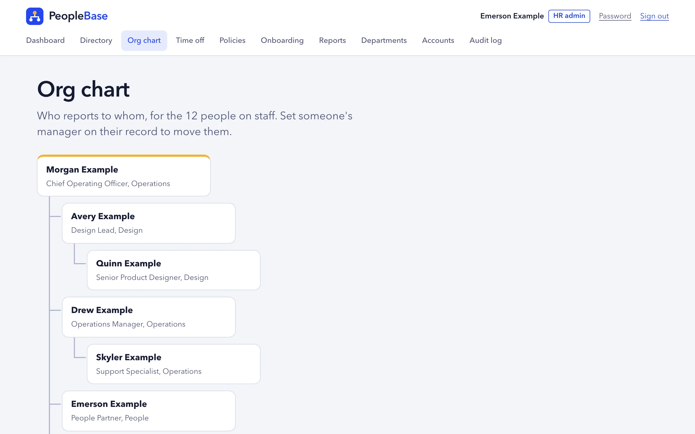
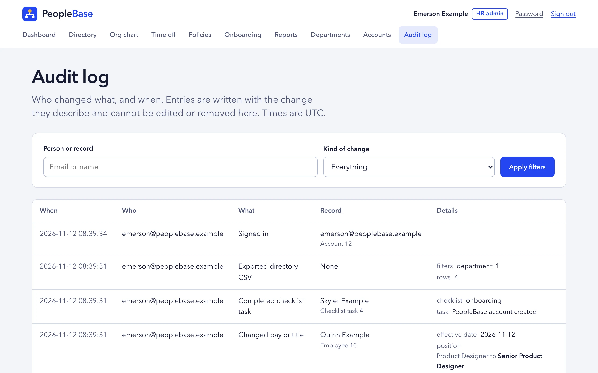

People data, and who gets to see it.
PeopleBase is a small HRIS in Flask: records, pay history, time off, onboarding, policies and an audit log. Employees, managers and HR sign in, and the server decides on every request what each of them may open.

The security model
A role grants a capability. The reporting line decides how far it reaches. One module, access.py, makes every decision.
- Own recordProfile, pay, leave balances, time off and checklist.
- Within reachDirect and indirect reports: profile, time off and checklists, and the say on their time off. Never their pay.
- Out of reachPeers, other teams and their own manager: a name in the directory and org chart, nothing more. Riley asking for Rowan's record gets the same 404 as a record that does not exist.
| Role | Sees | Can change |
|---|---|---|
| Employee | Own record, pay, leave balances and checklist; the directory and org chart | Own time-off requests, own policy acknowledgements, own password |
| Manager | The same, plus the records, time off and checklists of direct and indirect reports, without pay | Approve or deny reports' time off; tick their checklist tasks |
| HR admin | Everything, including pay, people who left, reports and the audit log | Records, departments, accounts and roles, policies |
How a request is checked
Every request passes the same gates, in this order, before a route does anything.
- SessionThe signed cookie must match an active account and its current nonce, and be under 12 hours old. Otherwise: the sign-in page.
- CSRFEvery POST needs the per-session token, sign-in and sign-out included. Otherwise:
400. - RoleHR-only actions answer
403to everyone else, whatever id is in the URL. - ReachThe record is loaded, then checked against the caller's reporting tree. Out of reach:
404. - AuditA change and its audit entry are saved in one transaction. The log refuses edits and deletes.
What it looks like
Captured from the running app with the demo data, in light or dark to match your system.




What it keeps track of
The everyday records a people team at a small company needs.
- People and reporting lines
- Records with department, manager, status, start date and last day, a searchable directory and the org chart.
- Pay history
- Every title or salary change with its effective date and reason, and a CSV export that spreadsheets cannot run as formulas.
- Time off and leave balances
- Requests, approval up the reporting line, and balances per leave type that accrue monthly in working days.
- Onboarding and offboarding
- A checklist for each new hire and each leaver. Marking someone as left turns off their account.
- Policy acknowledgements
- Published text never changes. A revision is a new version, and everyone is asked again.
- Headcount and attrition
- Twelve months of hires, leavers and headcount, with a CSV cut to the viewer's own reporting tree.
525
tests run on every pull request, on Python 3.11, 3.12 and 3.13.
- 16 abuse cases, each with a testChanging ids in URLs, forged form fields, session replay, password guessing, export scope and more, written down before the code.
- Every route declares who may call itOne test holds the route-by-role table and fails when a route is added without an entry.
- Argon2id passwords and a lockout that leaks nothingFive failures lock an email for 15 minutes, whether or not it has an account.
- Migrations tested against old databasesThree earlier schema shapes upgrade to one, checked on SQLite and PostgreSQL.
- The basics, keptCSRF on every form, a Content-Security-Policy without inline script, no-store pages and a 64 KiB request limit.
Run it locally
Python 3.11 or newer. The demo flag loads made-up people named "Example" and prints three sign-ins with a password generated for that run.
git clone https://github.com/patrickking67/peoplebase.git && cd peoplebase
python3 -m venv .venv && .venv/bin/pip install -r requirements-dev.txt
./scripts/dev.sh --demo # http://127.0.0.1:4104
./scripts/check.sh # lint, tests and repo checks